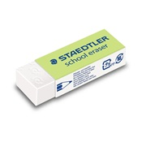

Welcome to the TRAG (The Rubbers and Giants) official website, you may have got here by the link in Accurate Rubbers Roleplay (Roblox) or something else, either way we are happy to see you! TRAG is a story that started in 2023 with the concept that school erasers became alive, not those pink diagonal ones, these ones,

sorry if you took out your giant pink block eraser, but THIS is the type of rubber we're talking about. pack it up guys, go to your nearest corner store and buy one of these if you want to make your own character, read the Rubber Info page for more info. If you'd like please post about us online and we might spread like fire in a forest.

We are not affiliated with or sponsored by Staedtler or Dats and ALL trademarks belong to them.